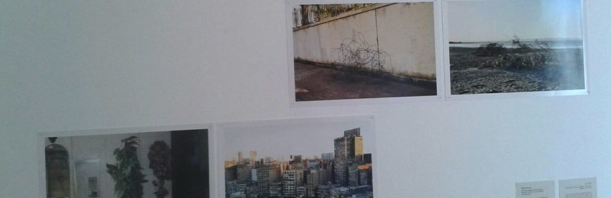
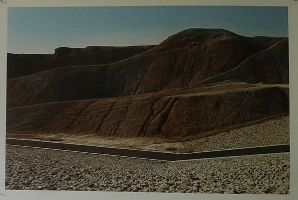
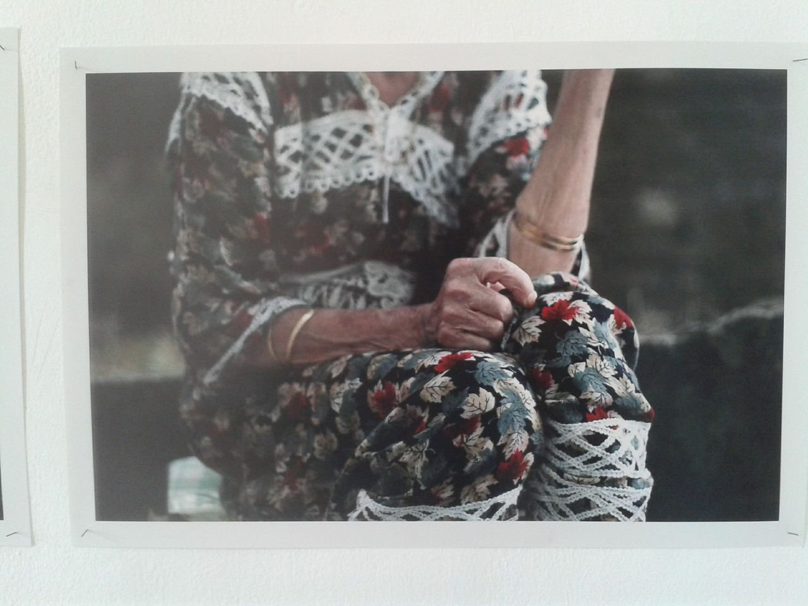
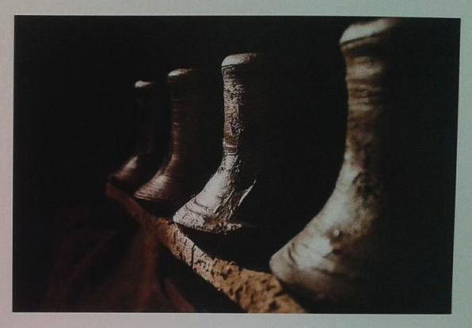
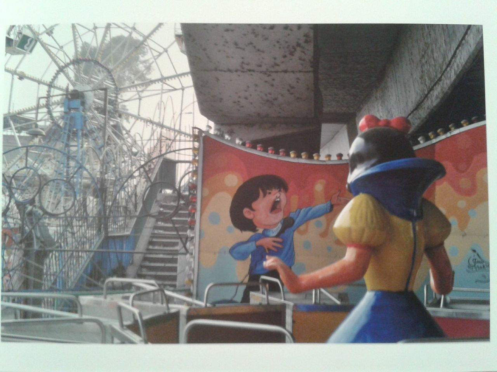

By Ismail Fayed
Next to Here, currently showing at the Contemporary Image Collective, is emblematic of the relationship foreign cultural institutions have with contemporary art spaces and organizations in Egypt and the art scene in general.
The exhibition is the second — after one titled Layer of Green, shown at the CIC in March — which comes as a result of a series of workshops organized by the Goethe Institut in Cairo together with art spaces all over the Middle East and North Africa. The workshops were organized through an open call, and close to 100 photographers from all over the region participated, as the exhibition catalogue explains.

Work by Nadia Mounier examining urban consumption and suburbanization in Cairo. Courtesy Nadia Mounier
Next to Here reflects curator Constanze Wicke's preoccupations regarding the primary artistic engagements of young artists in the region. In the catalogue's foreword, regional program director Günther Hasenkamp outlines the guiding theme for the project as "humans' changing relationship to nature." As broad a theme as this might be, the actual selection of works presented reflects the sociological approach to curatorship that is so prevalent in international cultural institutions and foundations working in Egypt.
These institutions seem caught in a double bind between supporting autonomous, vibrant and independent artistic endeavours and fulfilling the policy objectives of their respective funding ministries or foundations. The tension between these two forces produces a wide variety of cultural and artistic products, each reflecting how much each force weighs in at the time that they were organized. While the debate on "foreign" cultural institutions supporting the independent art scene is not new — and is undergoing a serious problematic questioning by an ever-increasingly paranoid regime — a constant vigilance as to what such contributions mean is absolutely necessary, as they can ultimately shape the ways in which artists come to understand their mediums and practices.
Next to Here reflects these tensions and problematics in terms of what defines a particular artistic interest and which artistic interests "should" be represented.
In the display of photographs by the 18 artists selected for the exhibition, one can immediately sense a sociological approach. Urban decay, environmental degradation, social inequalities, endemic waste disposal problems (a recurring theme throughout the exhibition and one that must make spectators think that the whole region lives in an infinite space of wasteland), war and displacement are the focus of the majority. Since many participants are "young artists," a naïve and unencumbered feeling permeates most of the work.
Some works showed remarkable sensitivity to their subject matter and real artistic ingenuity.

Alaaeddin Jaber (Jordan), photographs of dams and reservoirs exploring water scarcity while maintaining meditative visual qualities
Jordanian artist Alaaeddin Jaber is one such artist: On the one hand his two photographs of dams and reservoirs in Jordan show the deep anxiety about water supply in the country. On the other, we are invited to contemplate our relationship with them as similar to the one we have with natural bodies of water, like rivers or seas, giving a serene and meditative quality to the pictures that belies scarcity and the artificiality of such phenomena.
Algerian artist Awel Haouati's series Absences shows a powerful aesthetic sense for composition and patterns. Haouati tries to trace the effects time has on memory and space and the people inhabiting them by showing images of her grandparents' house and its interiors. I had my own personal moment of recollection through an image of her grandmother sitting in a traditional dress with golden bangles scattered along her forearm. This could have been almost anyone's grandmother in the region (mine owned an identical set).

Awel Haouati (Algeria), from the series Absences, tracing memory and time through her grandparents' house
In other works, the subject matter seems overwhelmed by artistic strategies.
Through intimate portrait photography, Jordanian artist Hussam Al Manasrah's The Circle of Pain – 65 years on the Banks of the River Jordan tries to show a more subtle and inconspicuous side of the tragedies of the Palestinian diaspora. His sitters' flinty and unyielding gazes only capture a sense of ennui, however, and one rather feels as if one is intruding.
UAE artist Fatima al-Yousef's work demonstrates the same problem. Conceptualized as showing the effects of change, destruction and construction in the UAE, the photographs presented a feeling of awkward presence in an unfinished space. Yousef's strategy eluded the concept she was trying to capture: The presence of an anonymous body in the space diverts our attention from tracing those effects, instead making us wonder about subjective presences in such spaces.
The work of Othamn Ben Kajjal (Morocco) was also hard to decipher beyond his aesthetic strategy: His beautifully taken pictures of a beggar's home in Morocco are such a densely coloured visual feast, it is hard to perceive the misery and desperation he was trying to show. Elsadig Mohamed Ahmed's cryptic series Lab of Creation falls in the same category. His shadowy photos about the craft of pottery do not reveal much beyond its poeticization.

Othamn Ben Kajjal (Morocco), densely colored photographs where aesthetic beauty overshadows the intended social critique
At the opposite end are works in which subject matter overrides any artistic method or strategy.
Tarek Marzougui and Mejdi El Bekri (both Tunisian) use narrative approaches to their subjects (urban decay in the former, and garbage collectors in the latter), but in the results one cannot see beyond the immediate presentation of the problem, rather than any specific artistic engagement with it. The work of Gailan Haj Omar (Iraq) is also burdened by the content of her subject matter. Her series from refugee camps, aimed at highlighting how a fresh water supply impacts the life of camp residents, falls into the category of the documentary.
Some works tried conceptual tongue-in-cheek strategies: Karim Aboukellila, Mariam Ahmed and Manar Moursi (surprisingly all Egyptians). Of the three, Moursi's close-ups of Cairo theme parks, situated at odd locations in the grey metropolis, give a sinister uneasiness to the question of whether childish innocence or joy can exist in a dismal landscape.

Manar Moursi (Egypt), close-ups of Cairo theme parks questioning innocence and joy in urban landscapes
Consumership. We don't Live in Our Countries, We Consume It, by Nadia Mounier (Egypt), and Beirut, One City, Many Neighborhoods, by Marwan Tahtah (Lebanon), both oscillate between immersion in the fabric of their landscapes and pointing at the potential implications of massive suburbanization in Cairo and post-war construction in Beirut, respectively. There is a certain geometric formality to both series that would be interesting to see investigated further.
Other works depict a particular visual experience, like Forgotten by Boris Oue (Morocco), and On the Margin of Jerusalem by Qais Assali (Jerusalem), yet the connections between concept and result are a bit inscrutable. Another work that is not easy to decipher is Egyptian artist Mai al-Shazly's series Inside – Outside, about the scarcity of green spaces in Cairo, but it stands out in its visual complexity and sensitivity for composition and form.
Ultimately, Next to Here provides a specific selection of works that show the institutional and personal approaches of both its curator and affiliated institution, the Goethe Institut. In doing so it sheds the light on the continued problematic relationship between independent contemporary art scenes in the region and a number of the actors and organizations that are supporting them. Such artistic efforts cannot escape the thematic interests of such institutions and foundations, and that can be seen in the recurring themes that are chosen by foreign curators, writers and journalists. The show reflects artistic propositions that are "next to here" but also other more critical issues "over there."
"Next to Here" showed at the Contemporary Image Collective until November 5, 2014.